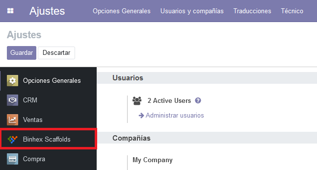
En el campo de UdM's de días se deben añadir las unidades de medidas que se tomarán como días.
En el campo de Servicios de andamios se deben añadir los servicios para los que se crearán andamios cuando sean detectados en un presupuesto.
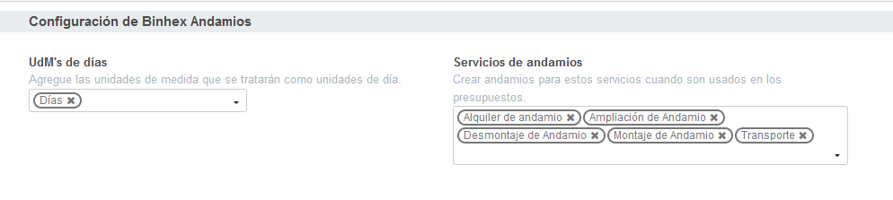
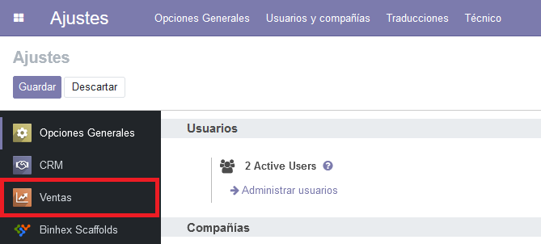
Deberemos marcar la opción de Variantes.
Esta opcián nos permitirá ver las variantes de productos existentes, que posteriormente tendremos que modificar.
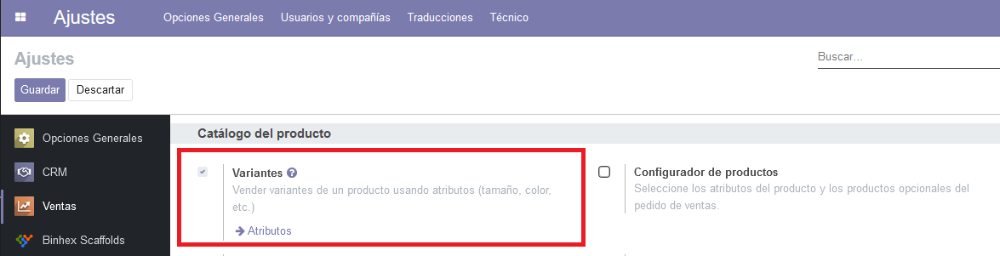
Podemos encontrar los servicios desde la aplicación de inventario o incluso desde la aplicación de Ventas.
Una vez dentro, tendremos que elegir los servicios que representarán el Montaje, Desmontaje, Alquiler, Transporte y Ampliacián.
Para esto tenemos la variable Tipo de servicio de andamio
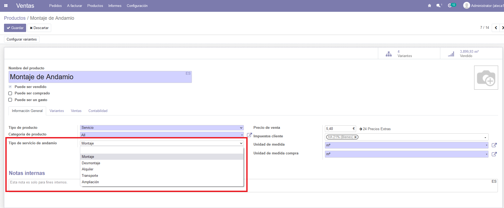
Debido a la gran cantidad de variantes que pueden existir de cada servicio, debemos elegir las variantes que se usaran por defecto para Montaje, Desmontaje, Alquiler y Transporte.
Para esto tenemos la variable Servicio por defecto
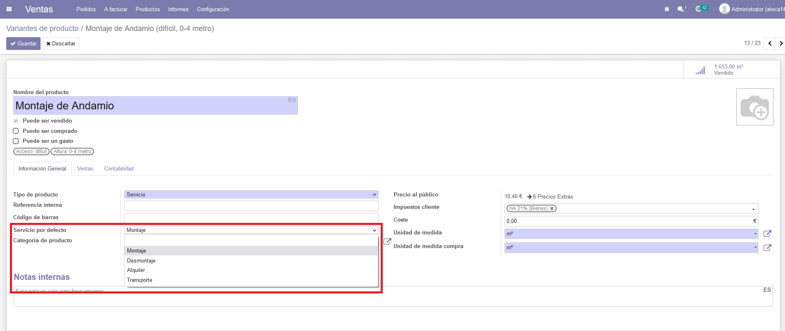
En este caso, los que elijamos por defecto serán los servicios que se usarán para generar las subtareas de cada tipo. Es decir, si generamos una subtarea(de manera automática o a travás del presupuesto) de tipo montaje, el servicio al que estará linkeado dicha tarea será la variante de producto que hayamos elegido
Con este módulo podremos presupuestar, facturar y crear proyectos con subtareas en base a los andamios.
Una vez confirmemos un presupuesto, se asignará un andamio a las lineas que tengan los servicios que hayamos elegido en la configuración de manera automática.
También, si tenemos que configurado que se creen tareas con esos servicios, se hará una tarea padre por andamio, que contendrá al resto de tareas que representa cada linea con ese mismo andamio.
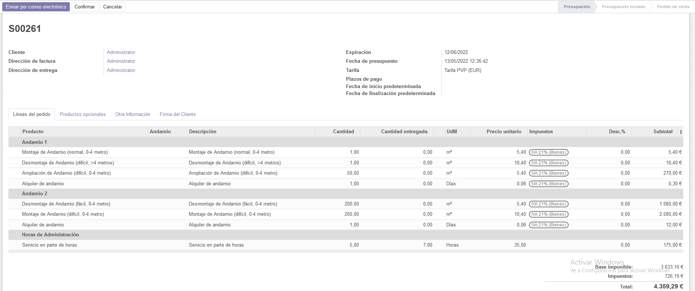
Si queremos presupuestar más de un andamio, se puede hacer como se ve en la imagen de arriba. De esta manera se creará un andamio por sección.
Una vez confirmemos, veremos la siguiente pantalla
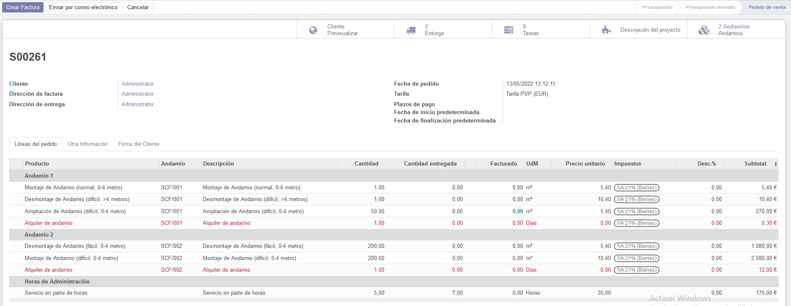
Como se puede ver, se ha creado 1 andamio por cada sección. Desde aquí podremos seguir el flujo normal de facturación.
El flujo de trabajo dentro de los proyectos será el siguiente.
Primero haremos una tarea que represente al andamio con el que se vaya a trabajar. Esta tarea será considerada la tarea padre de dicho andamio.
Esta tarea padre tendrá sub-tareas que representarán los servicios de montaje, desmontaje, alquiler y transporte. Para generar estas sub-tareas nos iremos a la pestaña de Sub-Tareas y podremos elegir cual queremos generar. Las sub-tareas de alquiler se generarán con un botón. La ventaja de esto es que las sub-tareas de alquiler te las genera de manera automática de mes a mes.
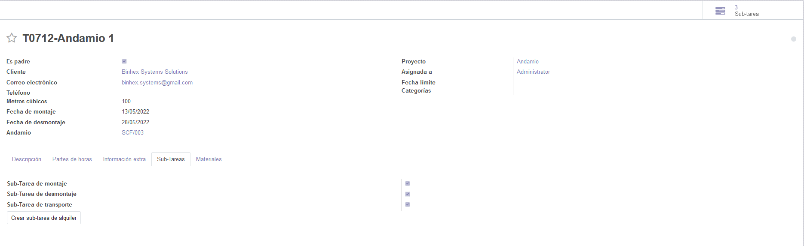
Si se quiere cambiar la cantidad de metros cñbicos o las fechas de dichas sub-tareas, se debe hacer desde la tarea padre y dicho cambio será replicado en todas las hijas
Además dentro de las sub-tareas podremos cambiar el servicio que usemos posteriormente para facturar. Por defecto se crearán con las que se eligieron durante la configuración
Este módulo nos permitirá facturar las tareas que hemos creado previamente.
Para esto debemos activar la variable Mostrar tareas para que se nos muestre la pestaña de Partes de trabajo. Desde aquí elegiremos las tareas que queremos facturar y una vez guardemos, se nos generarán las líneas de factura automáticamente
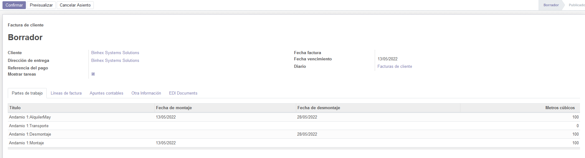
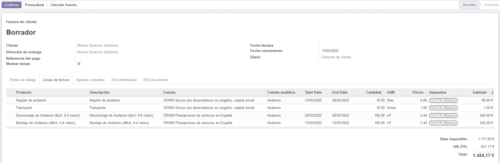